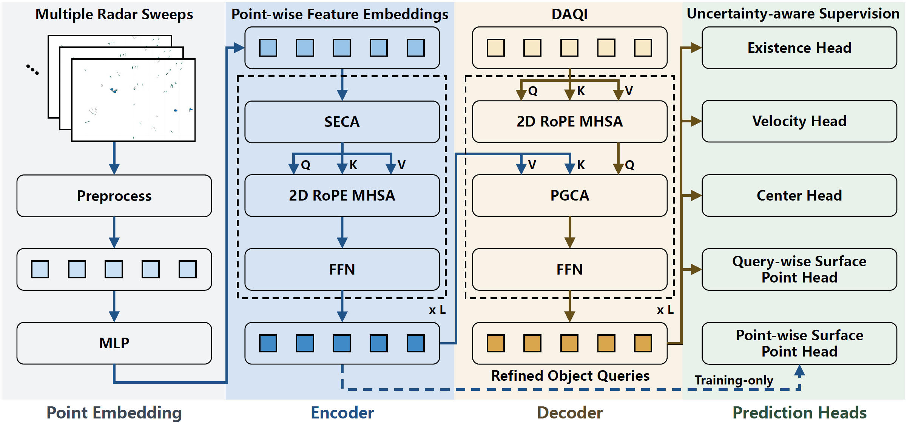
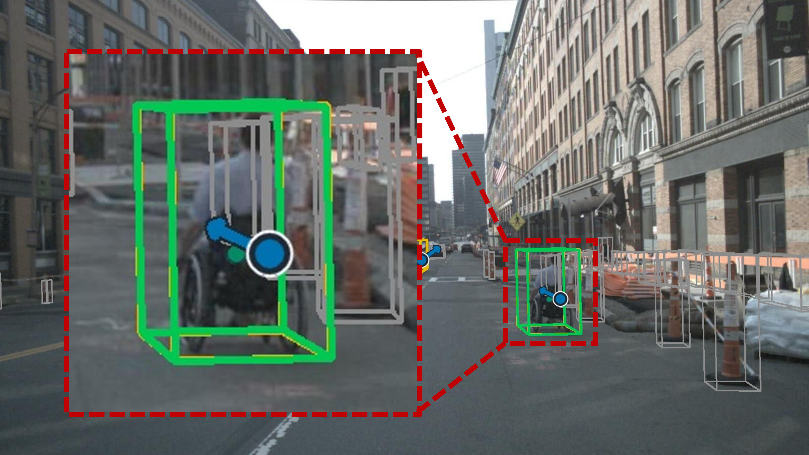
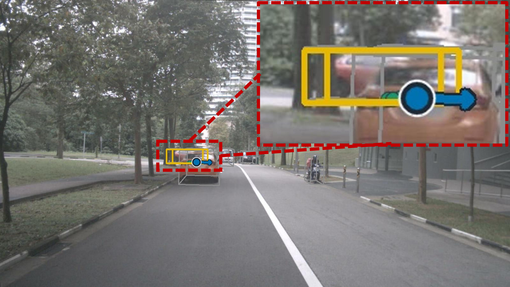
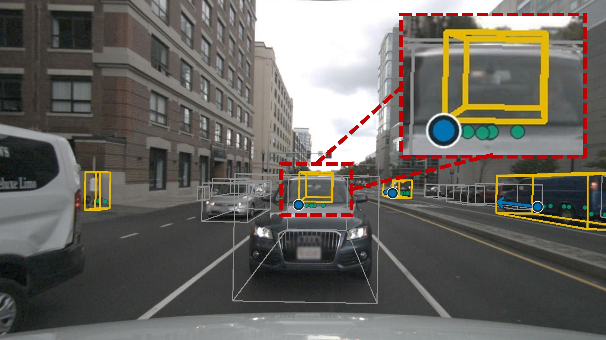
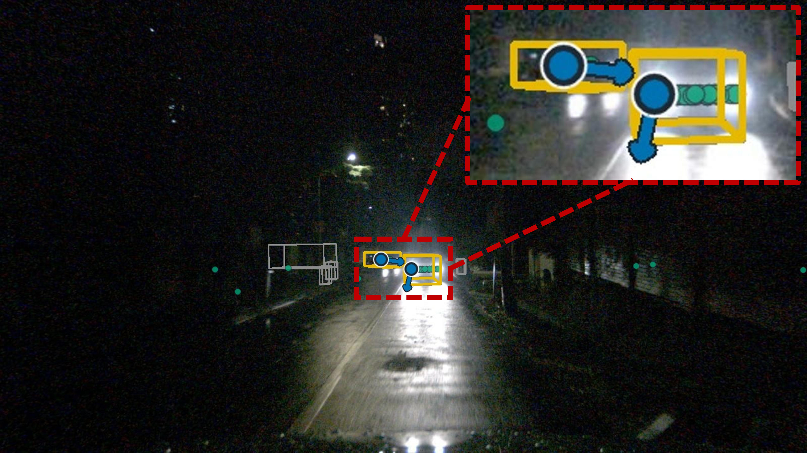
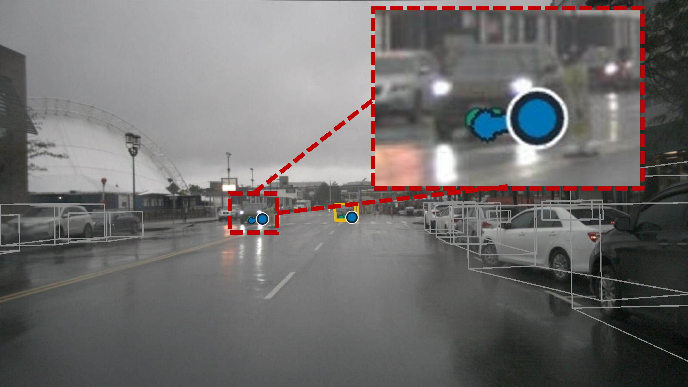
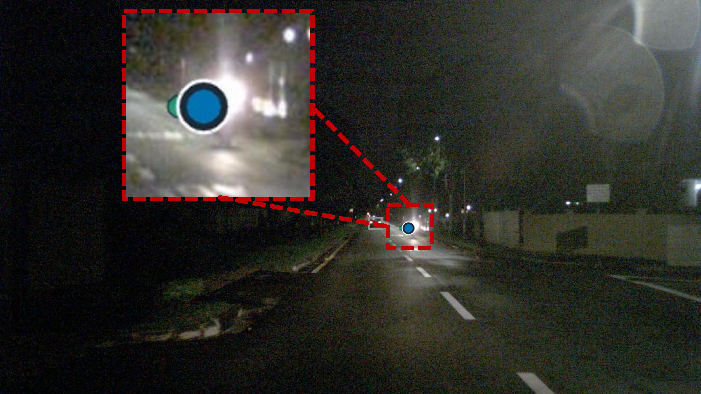

1.1M
Parameters
Overview
Closed-set detectors can overlook rare moving objects simply because they were never assigned a familiar category. PART uses radar's direct Doppler measurements as category-independent physical evidence: it asks whether an object is moving, not whether it looks like a class seen during training.
Operating directly on temporally aggregated sparse radar points, PART predicts an existence confidence, representative surface point, and ground-plane velocity for every moving-object hypothesis.
Main results on nuScenes
1.1M
Parameters
0.8827
Class-agnostic AP
0.3188 m
Surface translation error
0.8084 m/s
Velocity error
0.9203
Recall on rare objects
Method

Forms input-dependent object queries by grouping radar returns that agree in position and velocity.
Uses radial-Doppler consistency and radar cross section to associate queries with meaningful returns.
Avoids treating plausible radar-supported hypotheses as hard negatives when annotations are incomplete.
In the wild
A forward-driving sequence is shown at night, where sparse street lighting and headlight glare make visual appearance unreliable. Across the frames, teal markers denote moving radar returns. Blue surface markers and arrows show PART's predicted moving-object location and ground-plane velocity. The sequence illustrates that radar motion evidence remains available as the illuminated vehicle moves through the dark and glare-affected scene.
A powered wheelchair user moves through a road scene. This category is uncommon in closed-set driving taxonomies, yet the radar observations form a coherent moving pattern. Teal markers identify moving radar returns, while blue surface markers and arrows indicate PART's predicted surface location and ground-plane velocity. The demonstration highlights class-agnostic detection driven by physical motion rather than a familiar object label.
Qualitative results
special-category objects moving ground truth PART prediction











Quantitative results
All values below are reproduced from the current manuscript. Scroll horizontally to inspect wide benchmark tables.
| Method | Params. | Mod. | CA-AP ↑ | mASTE ↓ | mAVE ↓ | mATE ↓ |
|---|---|---|---|---|---|---|
| CenterPoint | 23M | L | 0.8746 | 0.4988 | 0.7097 | 0.4542 |
| VoxelNeXT | 31M | L | 0.8801 | 0.4498 | 0.6166 | 0.4172 |
| TransFusion-L | 32M | L | 0.8865 | 0.3617 | 0.8600 | 0.2790 |
| FCOS3D | 55M | C | 0.5254 | 1.2274 | 2.6908 | 1.2818 |
| PGD | 56M | C | 0.5423 | 1.4796 | 2.7007 | 1.3143 |
| PETR | 83M | C | 0.6553 | 2.9833 | 2.3070 | 0.9340 |
| BEVFusion | 157M | LC | 0.8877 | 0.3594 | 0.8138 | 0.2772 |
| LiRaFusion | 23M | LR | 0.8865 | 0.5282 | 0.7556 | 0.4792 |
| CRTFusion | 81M | RC | 0.8612 | 0.6699 | 0.7711 | 0.6206 |
| DAQI Proposals | N/A | R | 0.6776 | 0.5884 | 1.5758 | 1.7806 |
| PillarNet-R | 16M | R | 0.7492 | 0.9586 | 0.8702 | 0.8919 |
| RadarDistill | 41M | R(L) | 0.7684 | 0.7764 | 0.7499 | 0.7587 |
| PART | 1.1M | R | 0.8827 | 0.3188 | 0.8084 | 1.4846 |
Best value in bold; next two best distinct values are underlined. L: lidar; C: camera; R: radar. DAQI Proposals use DBSCAN cluster centroids and mean velocities directly. RadarDistill uses a lidar teacher during training but radar input at inference.
| Method | Mod. | Night | Rainy | Night + Rainy | ||||||
|---|---|---|---|---|---|---|---|---|---|---|
| CA-AP ↑ | mASTE ↓ | mAVE ↓ | CA-AP ↑ | mASTE ↓ | mAVE ↓ | CA-AP ↑ | mASTE ↓ | mAVE ↓ | ||
| CenterPoint | L | 0.8297 | 0.3398 | 0.7795 | 0.8528 | 0.5671 | 0.6729 | 0.8107 | 0.3410 | 0.7752 |
| VoxelNeXT | L | 0.8361 | 0.3602 | 0.6968 | 0.8606 | 0.4503 | 0.5776 | 0.7861 | 0.4930 | 0.6652 |
| TransFusion-L | L | 0.8584 | 0.2530 | 0.6825 | 0.8662 | 0.3699 | 0.8649 | 0.8520 | 0.3122 | 0.6785 |
| FCOS3D | C | 0.5197 | 0.6753 | 2.0607 | 0.5203 | 1.3734 | 2.6823 | 0.4973 | 0.6429 | 2.3148 |
| PGD | C | 0.6035 | 0.6951 | 2.6314 | 0.5114 | 1.2124 | 2.5529 | 0.5704 | 0.5634 | 1.9414 |
| PETR | C | 0.6855 | 1.6695 | 2.3924 | 0.6978 | 3.2089 | 2.0686 | 0.7257 | 1.4301 | 2.5327 |
| BEVFusion | LC | 0.8665 | 0.2533 | 0.7634 | 0.8754 | 0.4137 | 0.8732 | 0.8768 | 0.3278 | 0.7924 |
| LiRaFusion | LR | 0.8816 | 0.3382 | 0.7499 | 0.8864 | 0.5756 | 0.8066 | 0.8793 | 0.3007 | 0.5332 |
| CRTFusion | CR | 0.8683 | 0.4730 | 0.8821 | 0.8480 | 0.7055 | 1.0037 | 0.8863 | 0.3864 | 1.0296 |
| DAQI Proposals | R | 0.7026 | 0.4104 | 1.2325 | 0.6789 | 0.7148 | 1.6498 | 0.6889 | 0.4865 | 1.2728 |
| PillarNet-R | R | 0.8084 | 0.6602 | 0.9246 | 0.7711 | 1.0402 | 1.0874 | 0.8266 | 0.6334 | 0.6675 |
| RadarDistill | R(L) | 0.8162 | 0.3763 | 0.8175 | 0.7996 | 0.8528 | 0.7877 | 0.8164 | 0.4360 | 2.0693 |
| PART | R | 0.8930 | 0.2585 | 0.4651 | 0.8916 | 0.2811 | 0.7590 | 0.8892 | 0.2034 | 0.2994 |
| Method | Mod. | Police Vehicles NGT = 70 | Wheelchair NGT = 260 | Personal Mobility NGT = 102 | Animal NGT = 13 | ||||||||
|---|---|---|---|---|---|---|---|---|---|---|---|---|---|
| Recall ↑ | ASTE ↓ | AVE ↓ | Recall ↑ | ASTE ↓ | AVE ↓ | Recall ↑ | ASTE ↓ | AVE ↓ | Recall ↑ | ASTE ↓ | AVE ↓ | ||
| CenterPoint | L | 0.8286 | 0.2633 | 0.5565 | 0.0346 | 0.4032 | 0.3574 | 0.1863 | 0.2331 | 0.4617 | 0.1538 | 0.0979 | 0.2048 |
| VoxelNeXT | L | 0.8571 | 0.2872 | 0.6912 | 0.0115 | 0.3614 | 0.4953 | 0.1765 | 0.1923 | 0.3328 | 0.0000 | N/A | N/A |
| TransFusion-L | L | 0.5857 | 0.2038 | 0.6645 | 0.0038 | 0.4830 | 0.1431 | 0.0196 | 0.1621 | 0.4392 | 0.0000 | N/A | N/A |
| FCOS3D | C | 0.5286 | 0.5357 | 3.9904 | 0.0000 | N/A | N/A | 0.0588 | 0.2053 | 3.3621 | 0.0000 | N/A | N/A |
| PGD | C | 0.6143 | 0.4390 | 3.8758 | 0.0038 | 0.2099 | 1.5279 | 0.0392 | 0.1553 | 3.1449 | 0.0000 | N/A | N/A |
| PETR | C | 0.0000 | N/A | N/A | 0.0000 | N/A | N/A | 0.0000 | N/A | N/A | 0.0000 | N/A | N/A |
| BEVFusion | LC | 0.6000 | 0.3038 | 0.6558 | 0.0000 | N/A | N/A | 0.0000 | N/A | N/A | 0.0000 | N/A | N/A |
| LiRaFusion | LR | 0.5143 | 0.2723 | 0.7073 | 0.0077 | 0.1715 | 0.2147 | 0.0000 | N/A | N/A | 0.0000 | N/A | N/A |
| CRTFusion | CR | 0.6286 | 0.5582 | 0.7085 | 0.0192 | 0.2666 | 0.4843 | 0.1471 | 0.1546 | 1.6308 | 0.0000 | N/A | N/A |
| DAQI Proposals | R | 0.8571 | 0.5975 | 2.3529 | 0.8808 | 0.3043 | 0.3735 | 0.4706 | 0.1331 | 1.3884 | 0.6154 | 0.1305 | 0.1662 |
| PillarNet-R | R | 0.5588 | 0.4506 | 0.9424 | 0.0115 | 0.1633 | 0.2811 | 0.0000 | N/A | N/A | 0.0000 | N/A | N/A |
| RadarDistill | R(L) | 0.7647 | 0.3795 | 0.7877 | 0.0154 | 0.2340 | 0.4015 | 0.0000 | N/A | N/A | 0.0000 | N/A | N/A |
| PART | R | 0.9571 | 0.2931 | 1.0003 | 0.9577 | 0.1142 | 0.2161 | 0.8039 | 0.1063 | 0.6048 | 0.9231 | 0.2266 | 0.1838 |
NGT is the number of eligible ground-truth boxes. Gray cells indicate zero recall despite ground-truth instances; N/A denotes an undefined error because no true positive is available.
| Exp. | CA-AP ↑ | mASTE ↓ | mAVE ↓ | Special Recall ↑ |
|---|---|---|---|---|
| w/o DAQI | 0.6198 | 0.6777 | 1.3048 | 0.6646 |
| w/o PGCA | 0.8815 | 0.3300 | 0.8348 | 0.8931 |
| w/o UAS | 0.7948 | 0.3149 | 0.8292 | 0.3899 |
| w/o PWSH | 0.8827 | 0.3607 | 0.8325 | 0.9182 |
| FULL | 0.8827 | 0.3188 | 0.8084 | 0.9203 |
The w/o DAQI variant is reported at a fixed score threshold of 0.2 because it produces no valid detections at the standard 0.5 threshold; CA-AP uses the full confidence sweep. UAS: Uncertainty-Aware Supervision. PWSH: Point-Wise Surface Head. Special recall is evaluated over rare and safety-relevant categories.
Citation
If this work is useful to you, please consider citing our paper.
@article{sun2026part,
title = {If It Moves, Radar Knows: A Physics-Aware Radar Transformer for Class-Agnostic Moving-Object Detection},
author = {Sun, Yinghao and Li, Shuguang and Shao, Jinliang and Li, Tieshan},
journal = {arXiv preprint arXiv:2609.02289},
year = {2026}
}